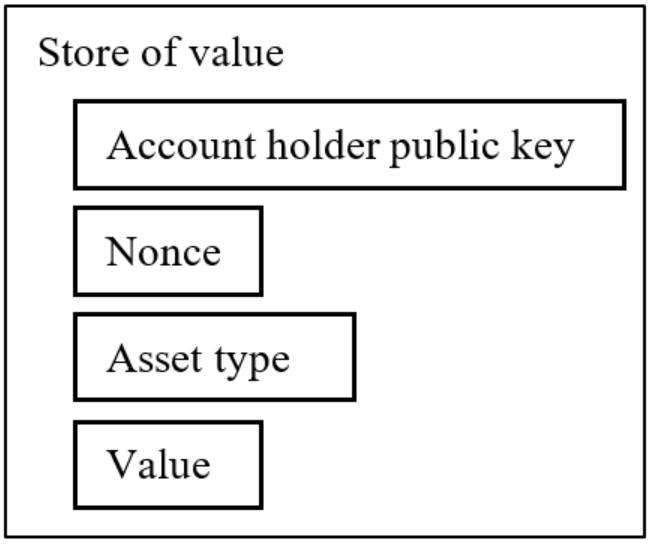
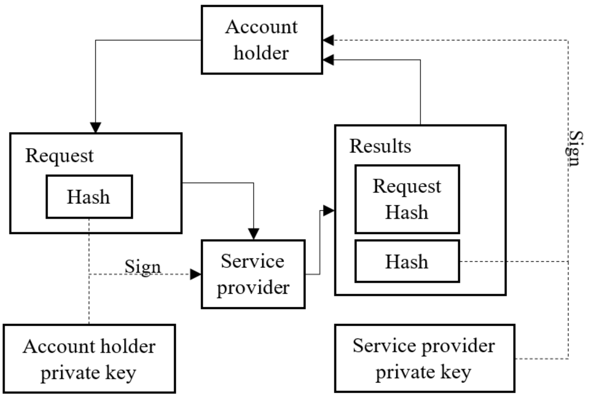
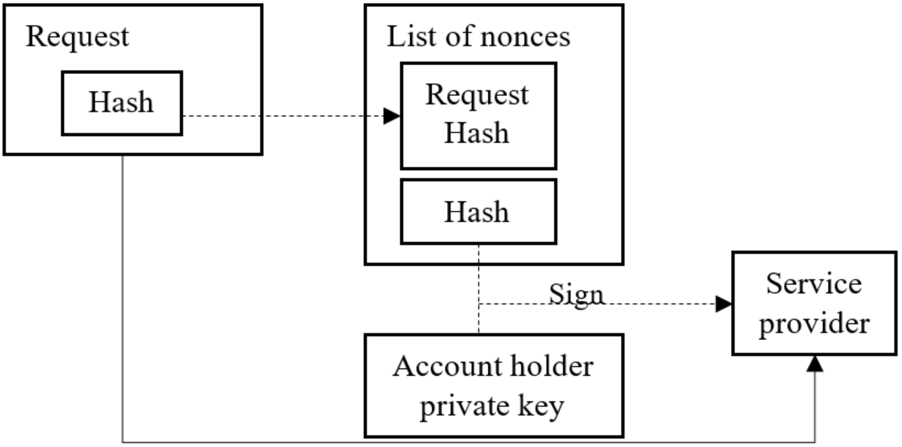

The smartest way to trade and hold your crypto
Imagine an exchange that gives you ultimate security without sacrificing performance.
All built into an easy to use, fast and conversational user experience unlike any other.

Imagine an exchange that gives you ultimate security without sacrificing performance.
All built into an easy to use, fast and conversational user experience unlike any other.
Register and you'll be signed up for the following:
Exclusive discounts on our upcoming tokenNews and updates about the projectVIP status for exclusive early access to our walletWe guarantee 100% privacy. Your information will stay confidential. It's our promise.
Do you believe in the potential of Personal Blockchains and want to help us spread the word? Join our referral program and get a free trade of any size when someone signs up:
Act unilaterally limiting access to users' accounts and funds
Lack clarity after a transaction has been executed
Have unclear or surprise fees
Show frustrating mystery errors
Waiting too long for verification and missing opportunities
Waiting for 20 minutes or more to complete a transaction
Struggling to figure out how to buy into ICOs
Provide non-intuitive and impersonal user experiences
Make critical functions hard for you to find
Require too many steps to finalize a simple transaction
Imagine trading on an exchange where every action is backed by a cryptographic receipt, giving you peace of mind that your trade will go exactly as you planned. We make this happen.
Now you can participate in ICO sales directly from your wallet. Symetria provides you with a unique sending address so you don't need to go through extra steps. Symetria enables you to consolidate all your crypto in one secure and easy to access place.
Imagine the flexibility of being able to send crypto through SMS or email. Symetria offers recipients the option of directing funds where they want them. We give you peace of mind to send crypto to first-time users, by offering them easy to follow instructions on how to set up, deposit and re-access a new wallet.
Imagine trading cryptocurrency securely, without the need for an account. You can trade instantly on Symetria with the security and speed of personal blockchains.
Imagine the peace of mind that comes with knowing that a 3rd party is auditing every transaction to ensure that they happen exactly as planned. Our isolated blockchain replay security system does exactly that.
Now with Symetria you can consolidate and convert your coin fragments into the cryptocurrency of your choice.
Josh eats, sleeps and breathes crypto. He is the original founder of Symetria and is in charge of all things tech. He is the master of this space. With three decades of programming experience he specializes in large scale data processing, networking communications, security (threat analysis and mitigation), computer forensics, cryptography, and distributed systems.
Adnan is the lead marketer for Symetria leveraging a wealth of strategic communications experience developed over a decade in Dubai, working with multi-national companies including Franklin Templeton and Hill+Knowlton Strategies. He brings structure and process to the business, helping us stay on track.
Erin is the official people person at Symetria. She brings a plenitude of multi-sector experience and the ability to talk to anyone. Community minded, Erin was elected to the board of the Canadian Business Council in Dubai and founded Dubai's Canada Club. She has a background in corporate social responsibility and sustainability and keeps us on our toes developing for the greater good.
Simon is instrumental in translating the Symetria vision into reality. He oversees all things brand, design and UX for Symetria, making sure that whatever we do is design-driven and user-centric. He brings with him 12 years of experience in the tech industry, ranging from work at various start-ups to larger corporations including EA Games, Microsoft, Bluzelle and Disney. He also taught design at the Vancouver Film School.
Edmund is our online voice and moderator. His role is to increase Symetria's following through our various social channels by telling our story where it is heard. Steeped in the crypto-scene in Vancouver, he is a co-organizer of Crypto-Vancouver, a leading cryptocurrency meetup in the city. Not new to the industry, Edmund joined us from Dfinity, an upcoming blockchain infrastructure project. He is also technically versed, with past experience as an Ethereum contract developer.
Join our team and be part of the Personal Blockchain revolution.
DRAFT (2018.01.29)
Abstract. A published consensus of rules governing interactions between a centralized system and each of its users would allow for proof of integrity between the two parties and to any concerned observer. Decentralized blockchains allow for the easy and secure transfer of funds to and from a centralized system, but cannot offer accounting for what happens within the system. We propose a solution to the problem of accountability using personal blockchains to bridge the gap between decentralized blockchains. The centralized system publishes a set of rules for interactions with services provided and each party signs their requests or service receipts, verifying the validity of each as they are received. Mining is not necessary. Privacy is maintained by default unless a party chooses to make public a part of the personal blockchain. A disagreement can be fairly judged by any impartial observer.
Services available on the Internet are almost exclusively provided by centralized systems, mirroring the centuries-old model used by all businesses, large and small. The trend is familiar and unlikely to vanish. Bitcoin introduced a peer-to-peer electronic cash system[1] to solve the problem of the inherent weaknesses of a trust based model. While a payment system using cryptographic proof instead of trust is essential, the solution is incomplete if the service being paid for relies on trust. The Internet is replete with confusion and complaints by customers facing challenges in their dealings with centralized systems. Both customer and service provider may state a position on the facts of a matter, but neither has proof, and disputed facts often can never be decided with certainty. A business will often take up the burden of a marketing and public relations effort to establish trust and sway opinion, but the efforts consume valuable resources and have limited effect. Cryptographic proof of integrity would enhance the efficacy of such efforts.
The system of cryptographic proof used by decentralized payment systems could be applied to a service provider. Ideally, the request for service and the service itself can be defined and verified by a published set of rules and secured by cryptographic proofs. If accomplished, an unbroken chain can be created, providing proof of integrity. In the case that a service, by its nature, cannot be proven by a computer algorithm, there may still be strong benefits to implementing the system to the maximum degree possible.
We propose that assets held on account are defined at minimum by an immutable data structure.

The store of value can represent any type of asset or liability, whether digital, like Bitcoin or game tokens, or tangible, such as gold, dollars or real estate.
Contracts can exist in any form, the parameters of which must be represented in a data structure. The rules governing each contract must be published and available to any potential third party judging the fairness of execution. There are no limitations as to the function of the contract.
Assets or liabilities held in stores of value are created and consumed only through the fulfillment of contracts.
Requests for service by way of contract are digitally signed by the account holder. The results of contract execution are digitally signed by the service provider and must include the request itself.

Stores of value will be consumed as required by the contract. Authorization is indicated by including the nonce of each store of value as part of the digital signature.

The service provider can prove that service was requested, and the details of the request, by way of the account holder's digital signature. The account holder can prove the results of the service, as well as the details of the request, by way of the service provider's digital signature.
Consumption of a store of value can be proven while maintaining privacy as to how it was consumed. Only the request hash and a list of nonces must be provided along with a digital signature as proof of consumption.
Maintenance of personal blockchains requires minimal resources. Implementation of the system is not expected to pose a significant burden on any typical or future consumer grade computer system.
Mining is not required. There is no double-spending problem in a centralized system, so each transaction itself forms a link in the personal blockchain. The only computational overhead is a single digital signature and verification, requiring only a fraction of a second.
The system does not require broadcasting of transactions, since by default, transactions are private between account holder and service provider. The digital signature required during communications typically adds only a few bytes of data and represents a negligible bandwidth overhead.
Storage requirements differ between account holders and service providers. The account holder typically only needs to store a record of unspent stores of value and contracts which have not yet finished execution. The actual storage requirements depend on the implementation details of the personal blockchain, however it is expected to require orders of magnitude less data storage than a decentralized blockchain. The service provider typically should maintain a record of all transactions, although requirements depend on the needs of the service provider. In particular, requests consuming stores of value should be retained. Most centralized services already retain a transaction history, so it is expected that storage requirements of personal blockchains would not be significantly different.
There is a strong incentive for a centralized service to act fairly. Acting in discordance with a published contract has reputational implications, as the offended party can publicly publish cryptographic proof of the facts. Presumably, this would tarnish the reputation of a business or threaten their existence altogether. As the popularity of a business increases, so does the incentive to continue to act with integrity.
There is also a disincentive for users to falsely make public complaints about a business. The business can defend against inaccurate complaints by demanding a digital signature or providing one themselves, depending on the circumstance.
In some cases, users unintentionally make false complaints, whether publicly or via support channels. Having a record proven by digital signatures can create clarity. The unfortunate circumstances of a user's computer being hacked and assets stolen, and that of a business simply stealing the assets themselves, are distinguishable only by the production of digital signatures from the personal blockchain.
We have proposed a system providing for accountability in a centralized system. We borrowed the concept of decentralized blockchains for payments and adapted it for use in centralized systems. The use of stores of value in conjunction with an open ended system of contracts was proposed. Together with the use of digital signatures, a centralized system can provide improved, or even perfect proof of integrity.
[1] Satoshi Nakamoto, "Bitcoin: A Peer-to-Peer Electronic Cash System", https://bitcoin.org/bitcoin.pdf, 2008.
We love personal blockchains. Personal blockchains could be used in plenty of other types of businesses, but we think a crypto wallet and exchange is a perfect example. So, we'd like to show you how we did it.
This document is an introduction, not a specification. Our hope is that you understand the fundamentals of how we made it work. Our API specification is still growing and evolving, and we'll be thrilled to share it with everyone in a separate document. For now, just the basics (but still a little technical...)
We're a wallet & exchange. So basically, we need to enable our users to:
And with Personal Blockchains, we can protect you every step of the way by proving that everything is done exactly as you expected. We can prove it, and you can prove it too.
In the personal blockchains whitepaper, everything happens using:
Think of it like this. Stores of Value is your wallet, where your valuable coins are stored. And Contracts are the things you do with your coins.
It fits perfectly into a crypto wallet & exchange.
Every Crypto Exchange should implement personal blockchains!
Most websites let you create accounts with a user name. But have you noticed that in the crypto world, blockchains like Bitcoin or Ethereum don't have accounts or user names?
In the crypto world, you get a key pair, not a user name.
Personal blockchains are all about bringing cryptographic proof of integrity to centralized services, because it doesn't make sense for payments to be crypto but services to be "just trust me".
Clearly, you'll need a key pair.
In fact, you are your key pair.
But don't worry. We developed a system so you can still access your key pair with a familiar username and password. It's fancy, and let's you login easily without ever telling us your key pair or your password (so it's super secure, too), but we'll talk about that somewhere else.
For now, just remember that your account and your key pair are actually the same thing.
To make a deposit is easy. Click "Deposit". We'll give you an address. You send your coins to that address. We add them to your account's wallet.
Yep. Exactly like a "just trust me" wallet or exchange.
But with Symetria, your app or browser is actually building your personal blockchain for you. There's two additional steps to protect you.
Step 1: Request a deposit address
{
method: "getdepositaddress",
params: {
publickey: "0x9183ff68d9ab3188431b...."
currency: "bitcoin"
signature: "0xab791098f8a8ee01267..."
}
}And our reply
{
result: {
addresses: [
{ format: "P2PKH", address: "1N837fb3p12Aa..." },
{ format: "Bech32", address: "bc1q0msrrs9419wdwrt..." }
],
signature: "0xfa729bf0978d13958..."
}
}What's all that? Well, it's some sorta JSON code. But don't worry if you're not too technical. You can still see all the important parts and just ignore all the extra stuff.
Here's the important parts of your request
And our response is important too. Our signature is proof that Symetria received your request and that it's us, not someone else, giving you those deposit addresses.
A signature can prove that a piece of data has not been changed, too. So, your signature covers all the data in your request. And our signature covers all the data in our response, plus all the data in your request. We don't reply with our publickey, because it's published, widely known and never changes.
We've just created a contract, as described in the Personal Blockchains whitepaper. Great teamwork!
Your app or browser saves it for you, and you can also export it or back it up if you want to. You're protected against shenanigans. How? Here's an example.
Imagine you deposit your life savings but it never shows up in your wallet. You contact us, but we tell you "Sorry, you must have deposited to the wrong address." How would you prove to the official courtroom of the internet (Reddit) that you didn't make a mistake?
In a "just trust me" wallet or exchange, nobody ever proves anything, but they sure argue a lot.
With Symetria, you could just copy and paste that little snippet from your personal blockchain. Now you've proven the facts. Our signature is proof to the world that those deposit addresses belong to you. We're forced to make it right for you, or to be exposed for our shenanigans.
In the "just trust me" wallet or exchange model, they get away with it and you lose your money.
We've just completed step 1, which is to obtain a deposit address. Next, you actually make your deposit on the bitcoin blockchain.
In the whitepaper, it says that stores of value are created and consumed only by executing contracts.
You must claim your deposit to create the store of value. In other words, you claim the deposit to add it to your wallet on Symetria.
Step 2: Claim a deposit
{
method: "claimdeposit",
params: {
transactionhash: "0x8619836f86a9...",
outputindex: 0,
currency: "bitcoin",
publickey: "0x9183ff68d9ab3188431b...",
number: "1"
signature: "0x0013f699aa68b..."
}
}And our reply
{
result: {
value: "100000000",
signature: "0x73dab810097d956ffa..."
}
}The parameter "bitcoin" says to look on the bitcoin blockchain. "transactionhash" and "outputindex" pinpoint the exact transaction on the bitcoin blockchain you're referring to. "publickey" tells us who you are. And "number" tells us where to put your money in your wallet. Our "value" response tells you how much was credited to your wallet.
The entire process is protected through the snippets of the personal blockchain which is being built for you automatically by your app or browser. Any observer can cross reference your personal blockchain and the bitcoin blockchain to verify everything is happening as it should.
No. Just click "Deposit". Your app or browser is doing everything else automatically. Don't worry about it.
This is important. Using a service with personal blockchains should be just as easy as using any of the "just trust me" services. It should be transparent. The users shouldn't have to change anything or learn anything new.
Your wallet is actually made up of numbered slots called stores of value. Each slot can hold any amount of any type of currency. You can fill up as many slots as you want to store as much as you want. Each slot can only be filled once and consumed once. All together, it forms your wallet.
But don't worry about it. On your screen, you'll just see "1 BTC" in your wallet balance.
In this case, we've just finished claiming a deposit and assigning it to slot number "1" in our wallet. There is now 1 BTC (or 100000000 satoshis) in slot number "1".
We'd like to do an exchange, but we only want to use 0.7 BTC. We'll need to split our 1 BTC into two pieces first. 0.7 BTC and 0.3 BTC. We'll still have 1 BTC total, but we'll be able to use 0.7 BTC for an exchange.
Here's how it happens
Symetria lets you transfer values from your wallet to anywhere you like. We could transfer to other people's accounts if we wanted to. But for now, we just want to transfer our 1 BTC into other slots in our own wallet.
Here's the transfer:
{
method: "transfer",
params: {
inputs: [
{
publickey: "0x9183ff68d9ab3188431b...",
numbers: [ "1" ]
signature: "0x801801fbba863ba8ed..."
}
],
outputs: [
{
publickey: "0x9183ff68d9ab3188431b...",
values: [
{
number: "2",
currency: "bitcoin",
value: "70000000"
},
{
number: "3",
currency: "bitcoin",
value: "30000000"
}
]
}
]
}
}Our response:
{
result: {
signature: "0xd4891ba071597992..."
}
}Skimming through all that, you can see we're consuming whatever is in slot "1" of our wallet, and outputting 0.7 BTC into slot "2" and the remainder into slot "3".
The signatures let you prove that we agreed to put 0.7 BTC and 0.3 BTC into your wallet. They also let us prove that you agreed to use up whatever was in slot "1" of your wallet.
If your money ever goes missing and we can't prove you authorized a transaction by showing you signatures, we're in big trouble! If your money goes missing on a "just trust me" exchange, what would you do?
Time to exchange! You want to exchange 0.7 BTC for 21 ETH (the price is 1 BTC = 30 ETH). There's several variations on how to do an exchange, but here's an example:
An exchange:
{
method: "offer",
params: {
publickey: "0x9183ff68d9ab3188431b...",
number: "2",
toCurrency: "ethereum",
rate: "30",
feeSchedule: "free",
allOrNothing: true,
fulfillmentNumber: "4",
cancellationNumber: "5",
signature: "0x97395f7896753..."
}
}Our response:
{
result: {
fulfilled: "2100000000",
cancelled: "0",
pending: "0",
signature: "0x77918ffbab018b0a7c..."
}
}In this example, you used up your wallet slot "2" which had 0.7 BTC in it. You exchanged it for Ethereum. The rate was 1 BTC = 30 ETH (or better). There were no fees. And your entire order filled immediately.
Now your wallet slot "4" has 30 ETH in it. And your wallet slot "3" still has 0.3 BTC in it. So your wallet on Symetria has a total of 0.3 BTC and 30 ETH.
Nope! It's exactly the same as you're already used to. You just type in how much you want to trade and what you want to trade for. All this other gibberish is taken care of by your app or browser without you seeing any of it.
An exchange protected by personal blockchains works exactly like an exchange on any of the other "just trust me" platforms out there.
It's time to make a withdrawal. You've decided you want to withdraw your 0.3 BTC. We've implemented withdrawals as contracts. Contracts let you do a bunch of other cool stuff too, but for now let's just get your withdrawal done.
It's a two step process. First, create the withdrawal contract. Second, fund the contract from your wallet.
Actually, for you, you just click "Withdraw" and tell us how much you want and where you want it. But all this other stuff happens transparently by your app or browser, keeping you safe on your personal blockchain.
Step 1: Create a contract
{
method: "createcontract",
params: {
inputs: [
{
currency: "bitcoin",
value: "30000000"
}
],
tokenoutputs: [],
blockchainoutputs: [
{
currency: "bitcoin",
value: "30000000",
fee: "0",
address: "1Z9omZ786x44dUv..."
}
],
notes: "2018-04-04 01:07:44 – I love Symetria!"
}
}Notice that no signatures are required. The notes are optional too, but we always appreciate a compliment.
Step 2: Fund the contract
{
method: "commit",
params: {
contracthash: "0x88a730983df..."
publickey: "0x9183ff68d9ab3188431b...",
number: "3",
signature: "0xa797400a128aff..."
}
}And our response:
{
result: {
signature: "0x2599826f00ba73c..."
}
}Once a contract is fully funded, the contract's outputs are processed. In our case, we created a contract requiring funding of 0.3 BTC, then we funded it.
A careful examination of the createcontract method call and a little imagination might give you some hints about how else contracts could be used.
The terms of the contract can be verified by the contracthash. The funding of the contract can be verified by the signature in our response. The amount of the funding can be verified by our earlier response agreeing to put 0.3 BTC into wallet slot "3". This proves the terms of the contract and that it has been fully funded.
Any observer can use this information and check the bitcoin blockchain to verify that the withdrawal was completed exactly as promised.
Adding Personal Blockchain Technology to Symetria lets us offer you an experience entirely on the blockchain and doesn't require any extra learning or effort.
Until now, you had perfect security on payment systems, but had to simply trust centralized services like crypto exchanges. What good is payment security if the service you're paying for is insecure?
We provide an interface between your personal blockchain and decentralized blockchains like Bitcoin and Ethereum, and we work exclusively on your personal blockchain for everything you do on Symetria. When it's time to withdraw, we provide another interface from your personal blockchain back onto decentralized blockchains.
Personal blockchain technology can serve a multitude of business models, not just wallets and exchanges. Get on board! We'd love to help, even if you're a competitor. We believe a widespread movement of businesses using personal blockchains can fundamentally change the way business is done. Let's do it together!